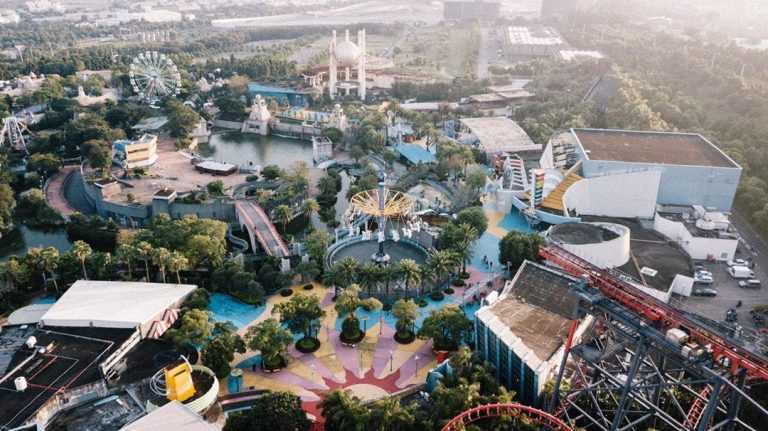
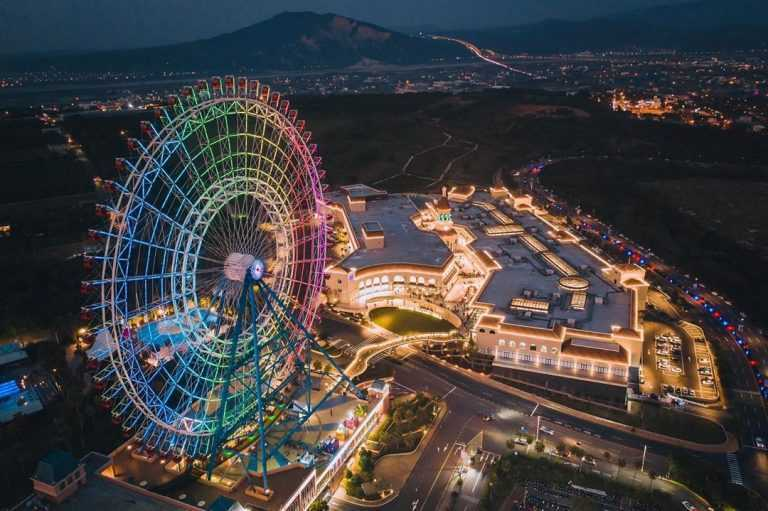
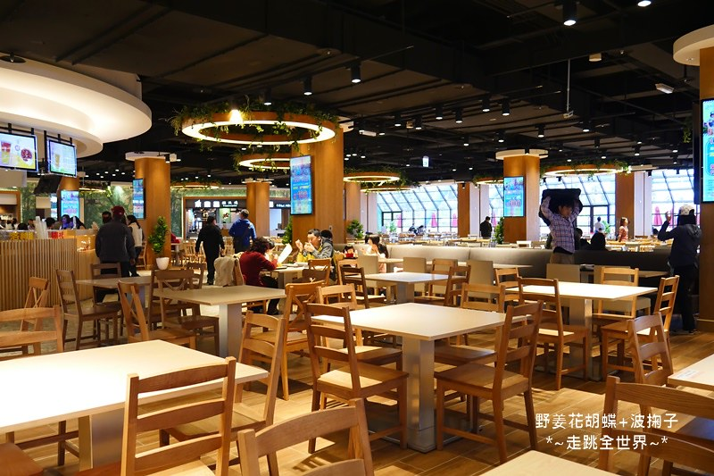

麗寶樂園
兩大水陸主題
麗寶樂園渡假區最代表性的就是擁有水陸兩大主題遊樂園區，分別為陸上的【探索世界】以及水上的【馬拉灣】
陸面上的探索樂園共有 23 種遊樂設施，其中刺激的項目包含全台唯一的斷軌雲霄飛車【搶救地心】、可正衝與倒衝的【火山冒險】 、在湍急河流與旋渦交錯的【叢林泛舟】、最高斜度的達88度的海盜船【探險虎克】。

天空之夢摩天輪
麗寶Outlet Mall最大亮點就是在高速公路行駛時就可以看到閃閃發光的【天空之夢摩天輪】
它也是全台灣最大的一座摩天輪，同時也是來自日本「天空之夢福岡」的摩天輪喔！總高度相當於台北101的88層樓，絕對是來麗寶Outlet Mall必搭的一項設施！

美食廣場
三樓就是大型的美食廣場，他們用的原木椅，讓整體的感覺更舒服
首先我們就從一期的美食廣場開始介紹，麗寶Outlet Mall一期的美食特區全部共 有21個美食櫃位的規劃，不定期也會更換新的品牌進駐選擇非常豐富，共食區的座席 數也非常足夠，靠窗的位置還可以一邊欣賞台灣最大的
